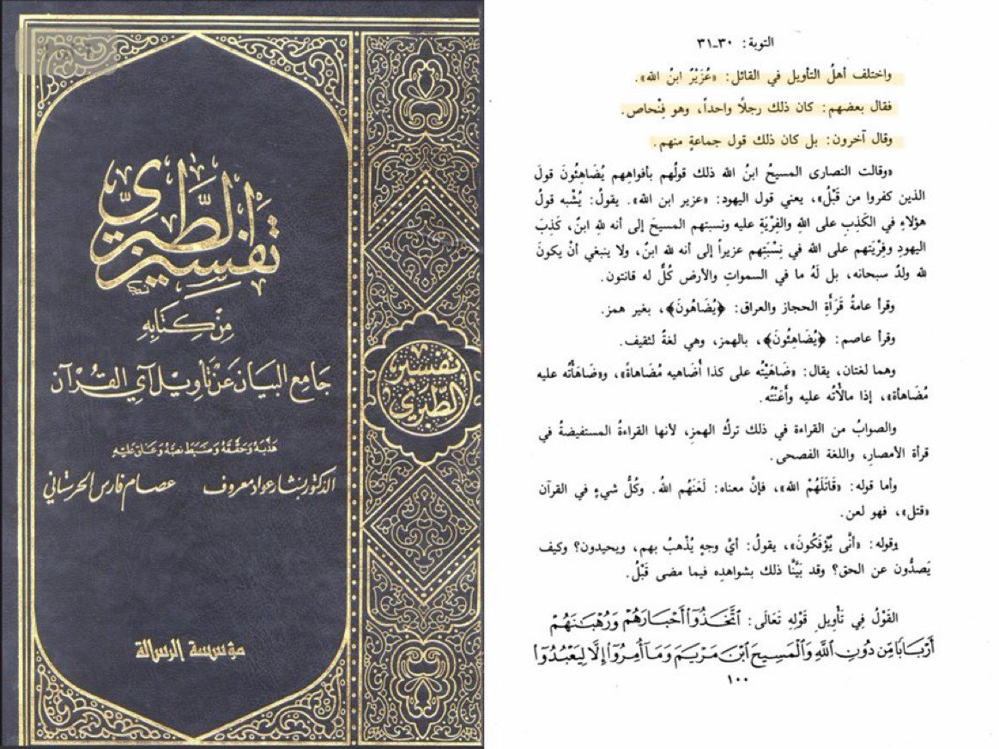
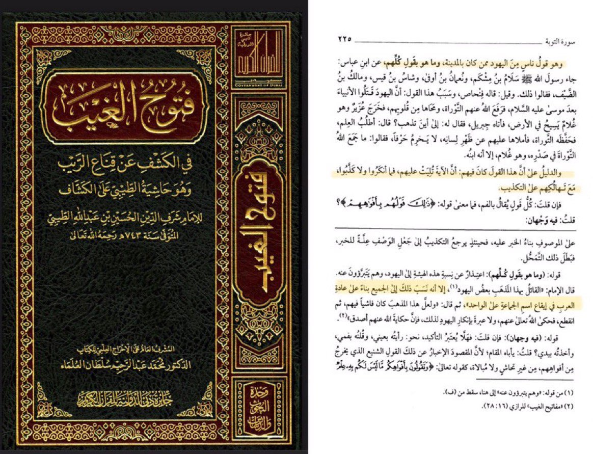
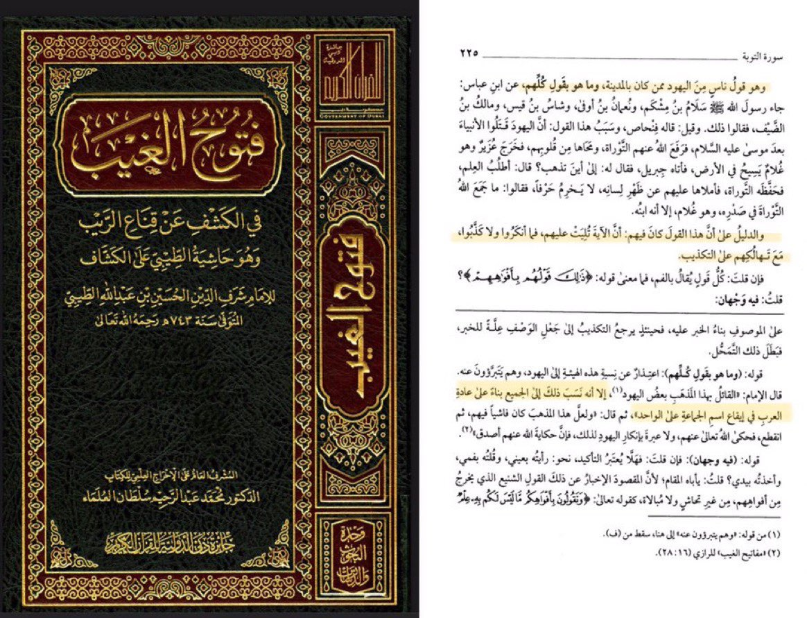

1st note:
It should be noted that this verse was revealed in Madina where the Jews used to be located at. There is absolutely not a single Hadith or a narration (whether authentic or weak) which says or even suggests that the Jews of Madina objected to the claim of this verse.
2nd note
If you note to what the verse says, you will realize that this statement was said by their mouth and not something documented in their text.
Q: Why did the Jews who converted to Islam as well as the Jews who remained within their faith didn’t object to the verse?
3rd note:
The Jews, Christians and Arab pagans used to come to the Prophet Mohammedﷺand used to ask him questions, dialogue with him, and sometimes object to what he says and recites. However, none among all of these faiths objected to this verse when it was revealed in Madina
4th note:
There is no doubt that Ezra (Uzair) was called by Jews as ‘Son of God’ since this term only means a person or a prophet who is very pious and righteous. But the main question is, why did the Quran choose Uzair specifically?
Final note:
The Quran chose Uzair specifically because some Jews in Madina held this belief.
This thread is to prove that not all the Jews said that Uzair is the son of Allah, rather it was either only one Jew or a small group of Jews that consists of 4 to 5 Jews.
Ibn Abbas (3 BH - 68 AH) says,
“Salaam ibn Mashkam, Nu‘maan ibn Awfa, Shaas ibn Qays, and Maalik ibn as-Sayf came to the prophet ﷺ and said, “How can we follow you while you do not follow our qiblah (direction of prayer) and you do not say that Uzair is the son of Allah?”
Ubaid ibn Umair (Died between 68-73 AH) says,
“This statement (Uzair is the son of Allah) was said by one man among the Jews named ‘Fanhas Bin ‘Azora’. “
Al Tabari (224-310 AH) states,
“The people of interpretation differed regarding the one who said the statement of Uzair is the son of Allah.
Some of them said that it was said by one person named Fanhas.
Others said that it was said by a group of them.”

Al Jassas (305-370 AH) says,
“It meant a group among the Jews who believed in that. The evidence for that is the fact that the Jews heard that at the time of the Prophet ﷺ and did not deny it. There are none among the Jews who say that now, and that group became extinct.”
Ibn Al Arabi Al Maliki (435-543 AH) says,
“This verse was revealed in Madina where the Jews used to be at. None transmitted that they (the Jews) refused this verse or object to it. It is apparent that this statement was said by some of them, and not all of them.”
Al-Zamakhshari (467-538 AH) says,
“(This statement) was not said by all of the Jews, rather it was said by some of the Jews who lived in Madina.
(Allah) attributed (this statement) to all of the Jews based on the Arabic grammar which refers plurality into singularity.
 Al Qurtubi (Born between 600 - 610, died in 671 AH) says,
This statement is general, yet it refers to specificity because not all of the Jews said that. The likeness of this verse is also found in Quran 3:173 where Allah says {those to whom people said} even though not all said

Ibn Taymiyyah (661-728 AH) says,
“What is meant by the Jews is a category of people, as in the verse (3:173). If some of them hold that view and express it and the rest remain silent and do not object to it, then they all have a share in the sin of that view.”
Al-Nisaburi (Died in 850 AH) says,
“This statement was said by some of the Jews and not all of them because Arabs attribute plurality to singularity. An example for this is, a person rides horses or a person sits with kings though he might not rode or sat except with one.”
Al Saadi (1307-1376 AH),
“This statement even though was not said by all of them, it was said by a group of them.”
Al Qurtubi (Born between 600 - 610, died in 671 AH) says,
This statement is general, yet it refers to specificity because not all of the Jews said that. The likeness of this verse is also found in Quran 3:173 where Allah says {those to whom people said} even though not all said

Ibn Taymiyyah (661-728 AH) says,
“What is meant by the Jews is a category of people, as in the verse (3:173). If some of them hold that view and express it and the rest remain silent and do not object to it, then they all have a share in the sin of that view.”
Al-Nisaburi (Died in 850 AH) says,
“This statement was said by some of the Jews and not all of them because Arabs attribute plurality to singularity. An example for this is, a person rides horses or a person sits with kings though he might not rode or sat except with one.”
Al Saadi (1307-1376 AH),
“This statement even though was not said by all of them, it was said by a group of them.”
 Josef Horovitz:
“It is possible that [the Prophet] Muhammad had heard of a Jewish or Judeo-Christian sect that similarly revered Ezra to how certain sects venerated Melchizedek.”
George Sale:
“It is not improbable, however, that the fiction came originally from the Jews, though they be now of another opinion, and I cannot fix it upon them by any direct proof.” (page 152)
Last but not the least, a Christian writer also proposed that Muhammad(ﷺ) got the information of Jews exalting Ezra to son of God from the Samaritans who said the Ezra had acted presumptuously and had changed the old divine alphabetical character of the holy Books of the Law - a character still used and revered to this day by rapidly dwindling Samaritan community.[6] This author concludes in a rather unchristian way that:
But it is not at all unlikely that the source of Mohammed's indictment of the Jews is to be found among the Samaritans or amongst Arab tribesmen of Samaritan strain. If we found in Samaritan literature the opposite belief that Ezra (or Uzair) was the son of Satan, we would be well-nigh sure of having settled the matter.Last but not the least, a Christian writer also proposed that Muhammad(ﷺ) got the information of Jews exalting Ezra to son of God from the Samaritans who said the Ezra had acted presumptuously and had changed the old divine alphabetical character of the holy Books of the Law - a character still used and revered to this day by rapidly dwindling Samaritan community.[6] This author concludes in a rather unchristian way that:
But it is not at all unlikely that the source of Mohammed's indictment of the Jews is to be found among the Samaritans or amongst Arab tribesmen of Samaritan strain. If we found in Samaritan literature the opposite belief that Ezra (or Uzair) was the son of Satan, we would be well-nigh sure of having settled the matter.
An explanation given by Muslim scholars from the time of al-Jāḥiẓ and al-Ṭabarī (d. 923) was that this belief had, in fact, been held by a group of Jews in Arabia, but that this sect had died out. Ibn Ḥazm, the famous Andalusian scholar (d. 1064), wrote that there was a group of Jews in Yemen who believed this. (Interestingly, an inscription from a 4th-6th-century CE Jewish temple in South Arabia suggests possible angel worship). A second explanation was that this Quranic verse related to the verse immediately following it: ‘They have taken their rabbis and monks as lords apart from God…’ (Quran 9:31). In other words, Jews venerated Ezra so much that it was as if he were a god to them.
Muslim scholars found a basis for the first claim – that some Jews actually considered Ezra to be the son of God – in a Jewish work entitled The Fourth Book of Ezra (probably composed in the first century CE), which had not been included in the Hebrew Bible but which rabbis still read and consulted (it belongs to a body of works known as the Old Testament Pseudepigrapha, namely works that claimed to be written by some Old Testament figures such as Enoch but which were really produced in the Hellenistic or early Roman periods). Fourth Ezra tells how Ezra led the Children of Israel after their return from the Babylonian exile, when their scriptures had been lost (this is all in the Bible’s book of Ezra as well). Ezra is given inspiration by God to reconstitute the Torah in 451 BCE. As a reward, God tells Ezra that “You shall be taken up from among men, and henceforth you shall live with my son….” Here it is important to remember that, like the belief of the Quraysh that angels were the daughters of God (“We worship the angels, who are daughters of God,” said the Quraysh to the Prophet in Ibn Isḥāq’s Sīra; see also Quran 17:40, 37:150-53), in Jewish scriptures of this period angels were called the children of God.
While we do not have direct information from Jewish sources about what the Jews of Arabia believed at the time of the Prophet ﷺ, we do know that many of the other beliefs that the Quran mentions Jews having were, in fact, found in the Babylonian Talmud (for example, the belief that Abraham would descend into Hell to remove all the Jews, and thus that they would only be punished there ‘for an hour’, reminiscent of Quran 2:80). And we know that a belief in Ezra/Enoch assuming the status of a super angel was common among Jews in Babylon/Iraq, the nearest and most influential center of Jewish thought and lore in the area in which the Quran was revealed. In fact, in 8th-century Baghdad, when a Jewish movement named Karaite Judaism emerged as a response to Rabbinic Judaism, one of its criticisms of mainstream Rabbinic Judaism was that it worshiped the Metatron as a archangel and substitute for God.
The question of what the Quran means by its mention of Jews and ʿUzayr reminds us of an important question, one that has occupied Muslims since the death of the Prophet ﷺ: Is everything in the Quran eternally binding upon Muslims? If not, how do we know which parts are and which parts aren’t? This would require volumes to answer, since it is, in truth, the single greatest engine of thought in the Islamic tradition.
But briefly, Muslims have always held that the Quran was and remains ‘suitable for all times and all places (ṣālih li-kull zamān wa kull makān).’ But this applies to the revelation as a whole, not to all its particular rules and references. To offer a blunt, non-legal example: ‘Perish the hands of Abū Lahab’ (Quran 111:1) will always be true, but it only applies to one person – Abū Lahab – and he has been dead for fourteen centuries. In the realm of law that could be binding on Muslims, the ulama have also concluded that some legal commands of the Quran applied only in the time of the Prophet. For example, in Surat al-Mumtahana, God commands the Muslims to refuse to return Meccan women who had fled to Medina as Muslims but instead to compensate their husbands by sending them the equivalent of the mahr. Although a minority of scholars has considered this ruling to have continued, so that, when believing women flee from outside the Abode of Islam to Muslims lands, Muslims might have to compensate their husbands, the vast majority of Muslim scholars consider this ruling to have ceased to apply. In the case of the Jews and ʿUzayr/Ezra, the same principle applies to a question of theology. The Quran’s discussion of what Jews believe ceases to be applicable once they stop believing it, and it would be sheer ignorance for Muslims to insist that our discussions with Jews hinge on obsolete tenets of faith.
Note: It’s also possible that, in the religious climate of pre-Islamic Arabia, ʿUzayr was actually a reference to Azarias, a figure connected to the Old Testament Book of Daniel. He is one of the Jews thrown into the fire by the Babylonians. But instead of burning, he looks like ‘a son of God’ (Daniel, 3:25). This story was reported by Wahb b. Munabbih and Ibn Qutayba (d. 889).
Josef Horovitz:
“It is possible that [the Prophet] Muhammad had heard of a Jewish or Judeo-Christian sect that similarly revered Ezra to how certain sects venerated Melchizedek.”
George Sale:
“It is not improbable, however, that the fiction came originally from the Jews, though they be now of another opinion, and I cannot fix it upon them by any direct proof.” (page 152)
Last but not the least, a Christian writer also proposed that Muhammad(ﷺ) got the information of Jews exalting Ezra to son of God from the Samaritans who said the Ezra had acted presumptuously and had changed the old divine alphabetical character of the holy Books of the Law - a character still used and revered to this day by rapidly dwindling Samaritan community.[6] This author concludes in a rather unchristian way that:
But it is not at all unlikely that the source of Mohammed's indictment of the Jews is to be found among the Samaritans or amongst Arab tribesmen of Samaritan strain. If we found in Samaritan literature the opposite belief that Ezra (or Uzair) was the son of Satan, we would be well-nigh sure of having settled the matter.Last but not the least, a Christian writer also proposed that Muhammad(ﷺ) got the information of Jews exalting Ezra to son of God from the Samaritans who said the Ezra had acted presumptuously and had changed the old divine alphabetical character of the holy Books of the Law - a character still used and revered to this day by rapidly dwindling Samaritan community.[6] This author concludes in a rather unchristian way that:
But it is not at all unlikely that the source of Mohammed's indictment of the Jews is to be found among the Samaritans or amongst Arab tribesmen of Samaritan strain. If we found in Samaritan literature the opposite belief that Ezra (or Uzair) was the son of Satan, we would be well-nigh sure of having settled the matter.
An explanation given by Muslim scholars from the time of al-Jāḥiẓ and al-Ṭabarī (d. 923) was that this belief had, in fact, been held by a group of Jews in Arabia, but that this sect had died out. Ibn Ḥazm, the famous Andalusian scholar (d. 1064), wrote that there was a group of Jews in Yemen who believed this. (Interestingly, an inscription from a 4th-6th-century CE Jewish temple in South Arabia suggests possible angel worship). A second explanation was that this Quranic verse related to the verse immediately following it: ‘They have taken their rabbis and monks as lords apart from God…’ (Quran 9:31). In other words, Jews venerated Ezra so much that it was as if he were a god to them.
Muslim scholars found a basis for the first claim – that some Jews actually considered Ezra to be the son of God – in a Jewish work entitled The Fourth Book of Ezra (probably composed in the first century CE), which had not been included in the Hebrew Bible but which rabbis still read and consulted (it belongs to a body of works known as the Old Testament Pseudepigrapha, namely works that claimed to be written by some Old Testament figures such as Enoch but which were really produced in the Hellenistic or early Roman periods). Fourth Ezra tells how Ezra led the Children of Israel after their return from the Babylonian exile, when their scriptures had been lost (this is all in the Bible’s book of Ezra as well). Ezra is given inspiration by God to reconstitute the Torah in 451 BCE. As a reward, God tells Ezra that “You shall be taken up from among men, and henceforth you shall live with my son….” Here it is important to remember that, like the belief of the Quraysh that angels were the daughters of God (“We worship the angels, who are daughters of God,” said the Quraysh to the Prophet in Ibn Isḥāq’s Sīra; see also Quran 17:40, 37:150-53), in Jewish scriptures of this period angels were called the children of God.
While we do not have direct information from Jewish sources about what the Jews of Arabia believed at the time of the Prophet ﷺ, we do know that many of the other beliefs that the Quran mentions Jews having were, in fact, found in the Babylonian Talmud (for example, the belief that Abraham would descend into Hell to remove all the Jews, and thus that they would only be punished there ‘for an hour’, reminiscent of Quran 2:80). And we know that a belief in Ezra/Enoch assuming the status of a super angel was common among Jews in Babylon/Iraq, the nearest and most influential center of Jewish thought and lore in the area in which the Quran was revealed. In fact, in 8th-century Baghdad, when a Jewish movement named Karaite Judaism emerged as a response to Rabbinic Judaism, one of its criticisms of mainstream Rabbinic Judaism was that it worshiped the Metatron as a archangel and substitute for God.
The question of what the Quran means by its mention of Jews and ʿUzayr reminds us of an important question, one that has occupied Muslims since the death of the Prophet ﷺ: Is everything in the Quran eternally binding upon Muslims? If not, how do we know which parts are and which parts aren’t? This would require volumes to answer, since it is, in truth, the single greatest engine of thought in the Islamic tradition.
But briefly, Muslims have always held that the Quran was and remains ‘suitable for all times and all places (ṣālih li-kull zamān wa kull makān).’ But this applies to the revelation as a whole, not to all its particular rules and references. To offer a blunt, non-legal example: ‘Perish the hands of Abū Lahab’ (Quran 111:1) will always be true, but it only applies to one person – Abū Lahab – and he has been dead for fourteen centuries. In the realm of law that could be binding on Muslims, the ulama have also concluded that some legal commands of the Quran applied only in the time of the Prophet. For example, in Surat al-Mumtahana, God commands the Muslims to refuse to return Meccan women who had fled to Medina as Muslims but instead to compensate their husbands by sending them the equivalent of the mahr. Although a minority of scholars has considered this ruling to have continued, so that, when believing women flee from outside the Abode of Islam to Muslims lands, Muslims might have to compensate their husbands, the vast majority of Muslim scholars consider this ruling to have ceased to apply. In the case of the Jews and ʿUzayr/Ezra, the same principle applies to a question of theology. The Quran’s discussion of what Jews believe ceases to be applicable once they stop believing it, and it would be sheer ignorance for Muslims to insist that our discussions with Jews hinge on obsolete tenets of faith.
Note: It’s also possible that, in the religious climate of pre-Islamic Arabia, ʿUzayr was actually a reference to Azarias, a figure connected to the Old Testament Book of Daniel. He is one of the Jews thrown into the fire by the Babylonians. But instead of burning, he looks like ‘a son of God’ (Daniel, 3:25). This story was reported by Wahb b. Munabbih and Ibn Qutayba (d. 889).